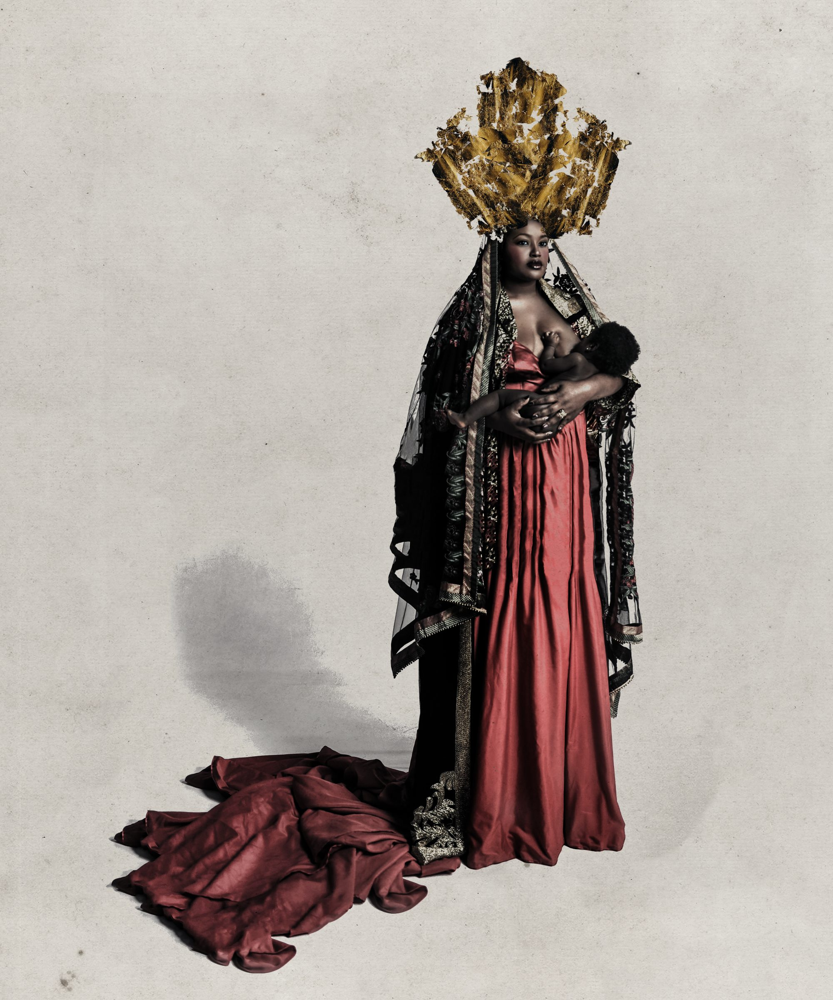
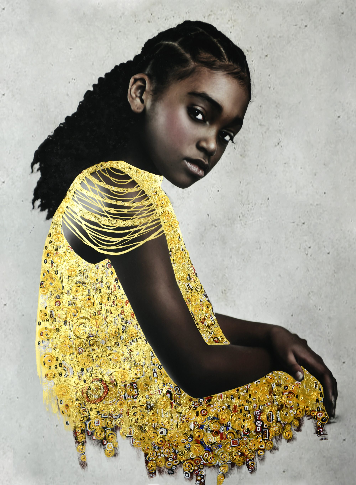
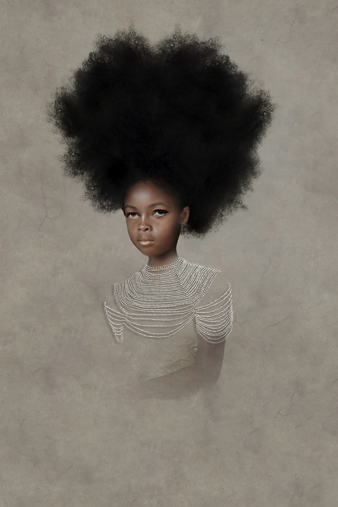
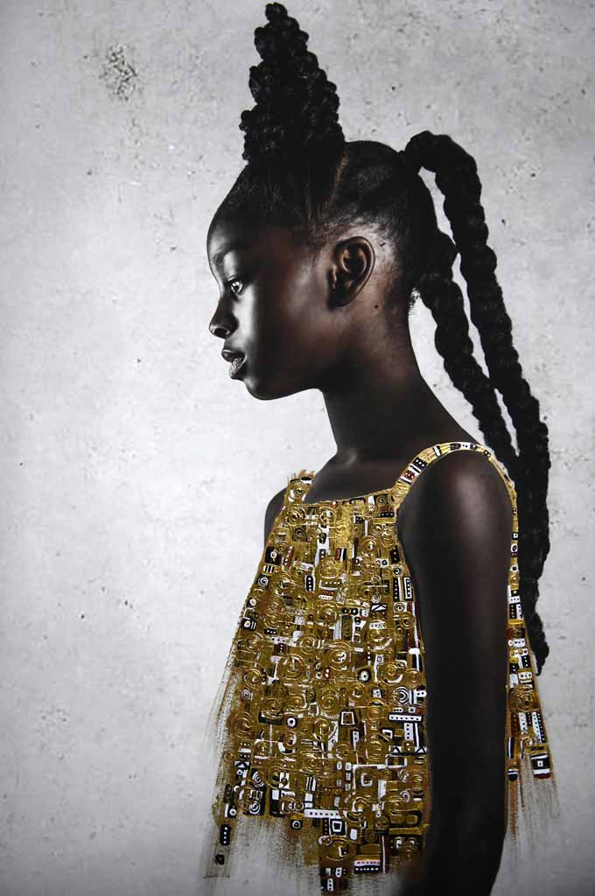
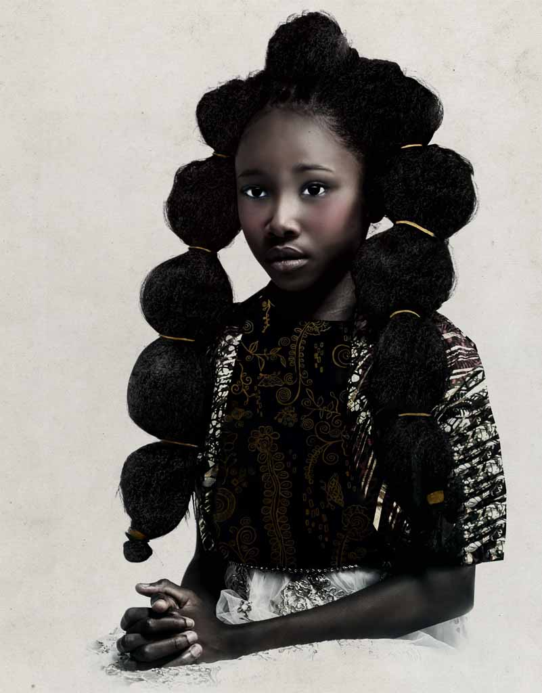

Tawny Chatmon
Inheritance
December 14 - March 22, 2020
Tawny Chatmon is a self-taught artist working in the field of photography for over 16 years.
She sees her photographs as a first layer of communication, further articulated by uniting them with other photographic and artistic elements,
including paint, digital collage, illustration and gold leaf. This exhibition, organized in collaboration with Galerie Myrtis,
aims to change the traditional African American child’s experience in a museum setting will include works from her series The Awakening, Byzantine Contempo,
and The Redemption. Chatmon has won several awards and recognitions, including Photographer of the Year, People Photographer of the Year,
First Place Professional People/Family and First Place Specially/Digitally Enhanced at the International Photo Awards 2018, as well as a number of awards at
Prix de la Photographie 2018 and Fine Art Photography Awards 2018. She has exhibited in galleries, fairs, and festivals around the world.

